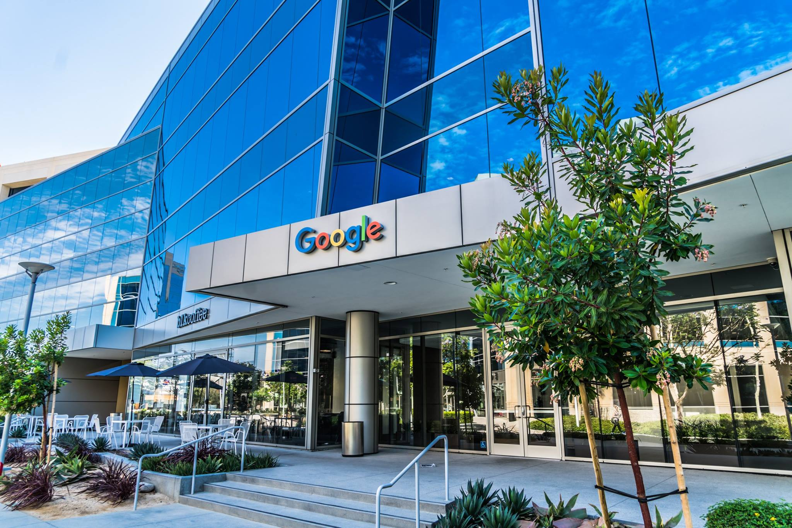
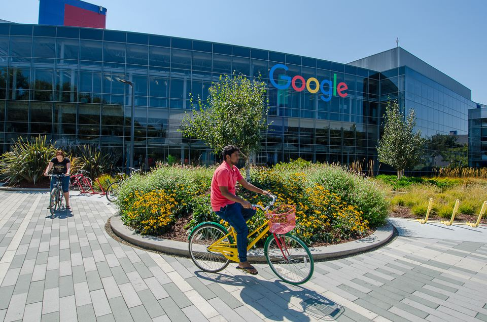

A keresőoptimalizálás (angolul Search Engine Optimization, azaz SEO) a weblap keresőmotorokban való megjelenésének javítását jelenti "normál" avagy nem fizetett keresési eredményekben. Általánosságban minél előbb, azaz jobban rangsorolva a találati oldalon és többször jelenik meg egy oldal a találati listában, annál több látogatást szerez a kereső használóitól. A SEO különböző területeket célozhat meg, mint például a képkeresés, videókeresés, helyi keresés vagy tudományos keresés, újságcikk-keresés avagy iparág-specifikus keresés.
Internetes marketing stratégiaként a SEO figyelembe veszi a keresőmotorok működését, az emberek keresési hajlamát, a keresési szavakat vagy kulcsszavakat, a célközönség preferált keresőit. Egy weblap optimalizálása állhat a tartalmának szerkesztéséből és a HTML-kódjának szerkesztéséből, a kulcsszó relevanciájának növelése és az indexelés megkönnyítése érdekében.
A SEO-k rövidítés a keresőoptimalizálókra (angolul search engine optimizers) is vonatkozhat, akik a keresőoptimalizálást elvégzik. A keresőoptimalizálók a SEO-t mind külön projektként, mint egy marketingkampány részeként is szolgáltathatják. A SEO taktikák a weblap fejlesztésébe és dizájnolásába is beépíthetők. A keresőbarát kifejezés az olyan CMS-ekre, weboldalakra, menükre, képekre, videókra, online boltokra használható, amelyeken elvégezték a keresőoptimalizálás folyamatát.
Fontos megjegyezni, hogy habár a kereső cégek maguk is támogatják a SEO azon formáját, ami segíti az oldalak sikeres feltérképezését, de számos keresést befolyásoló tényező üzleti titok. Így sok esetben a SEO munka megfigyelésre, statisztikákra és ezekből levont következtetésekre szorítkozik, nem pedig a vállalatok által megadott hivatalos ismeretanyagra. Ennek következménye az is, hogy folyamatban lévő fejlesztések visszacsatolási hiánya miatt egyes közvetetten bizonyított működési mechanizmusok nem biztos hogy érvényesek lesznek évek múlva is. A keresőoptimalizáció területén szükséges a folyamatos kutatások és vizsgálatok végrehajtása és figyelemmel követése. Vannak azonban régi, jól bevált alap szabályok, amiket mindenképpen érdemes betartani a keresőoptimalizálásban.
A mai, széles körben elterjedt internetes keresőmotorok az 1990-es évek elején kezdődő elektronikus információáradat következtében alakultak ki. Az internet kialakulásának első éveiben az összes elérhető webes tartalom a CERN által 1989-ben létrehozott – legelső – weboldalon került listázásra. Ekkor a világháló segítségével elérhető információk halmaza nem igényelt különösebb rendszerezést, így néhány évig nem volt szükség a fejlettebb keresési eljárások megalkotására. Az első internetes keresőmotor az Archie 1990-ben jelent meg, mivel ekkorra az online tartalmak száma – a WWW, a hipertext protokoll, valamint a grafikus böngészők és a telefonvonalas internetkapcsolat elterjedése miatt – jelentősen megnőtt, így a web szerverek listája kezelhetetlen méreteket öltött. A következő években sűrűn követték egymást az újabb és finomabb keresést biztosító keresőmotorok, melyek közül napjainkra a Google, a Yahoo, az Ask és a Microsoft keresője vált a legelterjedtebbé a kifinomult és releváns találati listák kialakításának köszönhetően.
A webmesterek és tartalomszolgáltatók az 1990-es évek közepén kezdték el a keresőoptimalizálást, az első webes keresők megjelentével. Kezdetben a webmestereknek csak be kellett küldeniük a weblap címét avagy URL-jét a keresőmotorokba és megvárni, amíg azok egy keresőrobotot küldenek az oldalra és indexelik azt. A folyamat során a keresőrobot letölti az oldalt a kereső szerverére, majd egy második program, az úgynevezett indexáló kinyeri az információkat, például a tartalmazott szavakat és ezek helyét, a specifikus szavak súlyozását és a lap által tartalmazott összes linket, amelyeket a keresőrobot a későbbiekben szintén letölt.
A weboldal-tulajdonosok felismerték oldaluk jól pozicionáltságának fontosságát, ezáltal mind white hat (etikus módszerek), mind black hat (etikátlan módszerek) SEO-nak lehetőséget adva. Danny Sullivan iparági elemző alapján a keresőoptimalizálás kifejezést először 1997-ben használták, a szó első dokumentált használata John Audette-hez és cégéhez, a Multimedia Marketing Grouphoz köthető az MMG weboldalán.
A keresőalgoritmusok korai verziói a webmester által megadott információkon alapultak, például a keyword (kulcsszó) meta tag és a keresőkben (pl. ALIWEB) indexelt fájlokon. A meta tagok minden lap tartalmához útmutatót nyújtanak. A meta tagok használata megbízhatatlannak bizonyult, hiszen amennyiben a webmester által megadott kulcsszavak pontatlan képét nyújthatják a valódi tartalomnak. A tartalomszolgáltatók is számos HTML-attribútumot manipuláltak. A kulcsszósűrűséget nagy mértékben előtérbe helyezés miatt a korai keresők a helyezésmanipulációtól szenvedtek. A jobb találati eredmények elérése érdekében a keresőmotoroknak biztosítaniuk kellett a legjobb és legrelevánsabb találatok megjelenítését, hiszen a webes keresők sikerét nagyban befolyásolja a valódi találatok aránya. A keresőmotorok komplexebb algoritmusokat hoztak létre, bennük olyan faktorokkal, amelyet a webmesterek nem ismertek és nehezebben tudtak manipulálni.
A Stanfordos diák Larry Page és Sergey Brin létrehozták a „Backrub”-ot, egy keresőmotort, amely az oldalakat egy matematikai algoritmus alapján értékelte. A számot a PageRank (Larry Page-ről kapta a nevét), a visszalinkelések mennyiségén és erősségén alapuló függvény számolta ki. A PageRank azt számolja ki, hogy milyen eséllyel éri el a random szörfölő felhasználó az adott weboldalt. Ez azt jelenti, hogy némely linkek erősebbek másoknál, hiszen a nagyobb PageRank-ű oldalakat nagyobb valószínűséggel találja meg a felhasználó.
Page és Brin 1998-ban megalapították a Google-t. A Google egyszerű dizájnjával és zavaró reklámokat mellőző felülettel nagy felhasználótábort vonzott. Az oldalon kívüli faktorok (PageRank, hiperlink-analízis) éppúgy beleszámítottak a találati listába, mint az oldal (kulcsszavak, meta tagok, fejlécek, struktúra), ezáltal a Google ellenállóbb lett a más keresőkben megtalálható manipulációnak. Habár a PageRankkal nehezebb volt trükközni, a webmesterek már kifejlesztettek automatikus linkbeküldőket, amelyek az Inktomi keresőt manipulálták és ezek a PageRank esetében is hasonlóan működtek. Rengeteg weboldal foglalkozott linkmegosztással, linkvásárlással és linkeladással. Egy részük igen nagy skálán történt, akár külön oldalakat, úgynevezett linkfarmokat is létrehoztak a linkek spammelése céljából.
2004-re a keresők igen sok nyilvánosságra nem hozott faktort emeltek be. A Google állítása szerint több, mint 200 különböző módszert használ. A vezető keresők, a Google, a Bing és a Yahoo nem publikálják metódusaikat. SEO-sok, mint például Rand Fishkin, Barry Schwartz, Aaron Wall és Jill Whalen különböző keresőoptimalizálási eljárásokat tanulmányoztak és eredményeiket fórumokon és blogokon hozták nyilvánosságra. A SEO-sok a keresőmotorok által benyújtott szabadalmakat is tanulmányozhatják az algoritmusokba való jobb betekintés érdekében.
2005-ben a Google elkezdte a bejelentkezett felhasználók számára személyesíteni a találati listát a keresési előzmények alapján.2008-ban Bruce Clay kijelentette, hogy a rangsorolás halott, mivel egy weblap potenciálisan felhasználónként más-más helyen jelenik meg a listában.
2007-ben a Google a fizetett linkek elleni küzdelmet jelentette be. 2009-ben a Google bejelentette, hogy méréseket végeztek a hatás csillapítása érdekében a nofollow attribútummal. Matt Cutts, a Google szoftvertervezője bejelentette, hogy a jövőben a nofollow linkek nem lesznek egyenértékűként kezelve a PageRank-szobrászat megszüntetése érdekében. Ennek eredményeképp a nofollow a PageRank "eltűnését" eredményezi. Ennek megelőzésére SEO-sok a nofollow attribútumot összekevert JavaScripttel helyettesítik. Alternatív megoldás az iframe, a Flash és a Javascript.
2009-ben a Google bejelentette a keresési előzmények használatát a személyesített találati listához minden felhasználónak. A Google Instant-ot 2009 végén jelentették be, amely gyorsabb, frissebb és relevánsabb találatokat eredményez. Korábban a weboldal-tulajdonosok hónapokat töltöttek oldaluk optimalizálásával, ám a szociális média elterjedésének köszönhetően mára rövid idő alatt bekerül a weblap. 2009 szeptemberében a Google nyilvánosan elismeri, hogy a keresőjük figyelmen kívül hagyja a - korábban az egyik legfontosabb SEO eszköznek tekintett - keyword(kulcsszó) meta tag-okat, a gyakori visszaélések miatt. Még ugyanebben az év októberében a Yahoo is bejelenti, hogy nem fogja használni, a Bing kereső pedig alacsony jelentőségűnek degradálta a meta keyword szerepét.
2011-ben a Google bejelentette a Panda nevű frissítést, amely a másoló weboldalakat bünteti. Korábban oldalak a más weblapok tartalmának egy az egyben történő átemeléséből profitáltak és szereztek új látogatókat, melynek lehetőségét ez a frissítés megszüntette.
2012-ben a Google azt ígérte, hogy a túloptimalizált weboldalakat akkor is megbüntetik, ha tételesen semmi más szabályt nem szegtek meg. Büntetést alatt az értendő, hogy a Google keresőjében a weboldal hátrébb kerül a találati listában.
1997-re a keresőcégek realizálták, hogy a webmesterek felismerték a jobb helyezés szükségességét a találati listákon és a cél érdekében, akár a keresőrobotok manipulálásával. Ezért a korai keresők, például az Altavista az algoritmusaik módosításával próbáltak ez ellen küzdeni.
A jó céltalálatok magas marketing értéke miatt a SEO-sok és a keresőmotorok között potenciális érdekellentétes viszony áll fent. 2005-ben egy konferenciát, az, AIRWeb-et (Adversarial Information Retrieval on the Web,) hozták létre az agresszív tartalomszolgáltatók hatásának megvitatására és minimalizálására. A túlzottan agresszív módszereket alkalmazó cégeket kitiltják a keresési találatok közül. 2005-ben a Wall Street Journal egy céget, a Traffic Power-t, miszerint az kockázatos eljárásokat használ és ezt partnereinek nem adja tudomására. A Wired magazin pedig azt jelentette, hogy ugyanez a cég beperelte a SEO-st és bloggert, Aaron Cutts-ot, mivel az a kitiltásról írt. Matt Cutts a Google-től később megerősítette, hogy a Google kitiltotta a Traffic Power-t és néhány ügyfelét.
Némely kereső megszólítja a SEO-ipart és szemináriumokat, előadásokat vagy épp beszélgetéseket szponzorál a témában, továbbá segítséget nyújt a weboldal minél jobb optimalizálásában. A Googlenek van egy Sitemaps (Oldaltérképek) programja, amely megmutatja, ha a Google-nek problémája van a weblap indexelésével. A Bing Toolbox pedig olyan eszközt nyújt, amellyel oldaltérkép és feed küldhető be, továbbá megtekinthető az indexelt lapok száma.
2002. október 17-én a SearchKing internetes cég beperelte a Google-t, mivel szerintük szándékosan úgy hangolták a PageRank algoritmusukat, hogy az hátrébb rangsorolja a weboldalukat, mint azt kellene. A SearchKing kiesése 75 ezer dollárra becsült. 2003. május 27-én a bíróság helyt adott a Google indítványának, a SearchKing elvesztette a pert.
2006 márciusában a KinderStart pert indított a Google ellen. A benyújtott indítványuk szerint a Google mindennemű értesítés nélkül leminősítette a weboldalukat a keresőjükben, ezzel előnytelen helyzetbe hozva őket a találati listában. Ezáltal 70%-kal csökkent a látogatottságuk, 80%-kal pedig a bevételük száma. A KinderStart a pert elvesztette.
A Google, a Bing és a Yahoo, azaz a vezető keresőszolgáltatások úgynevezett keresőrobotokat használnak az algoritmikus keresőtalálatok megtalálásához. Az olyan oldalakat, melyeket átlinkel egy másik, már a találati listákban szereplő oldalra, nem kell manuálisan ajánlani, ugyanis automatikusan megtalálják a kereső robotok. Némely keresők, így például a Yahoo! fizetett beküldőrendszereket üzemeltetnek, amely garantálja az indexbe kerülést vagy egy előre meghatározott áron vagy pedig kattintásonkénti áron. Ezen programok garantálják ugyan az adatbázisba kerülést, ám nem garantálják a megadott hely elérését. Két fő linkgyűjtemény, a Yahoo Directory és az Open Directory Project személyes beküldést és emberi elbírálást kívánnak meg. A Google a Google Webmaster Tools nevű eszközzel lehetővé teszi egy XML oldaltérkép létrehozását és ingyenes beküldését, amely biztosítja az összes aloldal megtalálását, így legfőképp azokét, amelyeket az automatikus feltérképezés nem fedezne fel.
A keresőrobotok egy weblap feltérképezésekor sok különböző faktort vehetnek figyelembe. Nem minden lapot indexelnek a keresőmotorok. Az oldalak távolsága a főlaptól meghatározó szerepet játszhat abban, hogy bekerül-e a lap az indexbe.
A nem kívánt tartalom keresőkben való elrejtése érdekében a webmesterek a keresőrobotokat a robots.txt fájl segítségével egyes lapok vagy könyvtárak kihagyására utasíthatják. Mindemellett egy kifejezetten robotok számára szóló meta taggal expliciten kihagyhatók az oldalak. Amikor egy kereső meglátogat egy oldalt, a gyökérkönyvtárban található robots.txt az első általa letöltött lap. A robots.txt-t értelmezi és az abban található lapokat kihagyja az indexelésből. Mivel a kereső tárolhat egy helyi fájlt, így lehetséges, hogy az elrejteni kívánt lapok is megjelennek ha nem ad meg tiltást a weblap készítő. Az elrejteni kívánt tartalmak között általánosságban a, személyes könyvtárak, login-oldalak, login-specifikus oldalak, például bevásárlókosár és felhasználó által generált oldalak, például a saját belső keresési találatokat adó oldalak szerepelnek. 2007-ben a Google figyelmeztette a webmestereket, hogy a saját weblapjuk belső keresőlapja által adott keresési eredmény indexelését meg kell akadályozniuk, mert spamnek minősülnek.
A robots.txt azonban nem csak teljes oldal korlátozásokat, hanem részletes korlátozásokat tartalmazhat. A kereső robotok annál gyakrabban látogatnak egy oldalt minél fontosabb a saját ranglistájuk szerint. Népszerű oldalak esetén előfordulhat az a probléma, hogy már a túl gyakori kereső motorok általi feltérképezés is feleslegesen terheli az oldalt, így meghatározható egy időkorlát, ami megadja a két feltérképezés közti minimális időt. Így járnak el például a Fehér ház hivatalos weboldalánál is.
Több módszer is javíthatja egy weboldal helyezését a keresés találati listáján. A weboldal akadálymentes feltérképezésének egyik fontos alap eszköze a webes szabványok betartása. A saját weblapon belüli linkelések az allapok között javíthatja a rangsorolást. A gyakran keresett kulcsszavakat optimális mértékben magukban foglaló tartalmak írása növelheti ezek relevanciáját, ezáltal a keresésszámot és így a forgalmat is.[48] A tartalom rendszeres frissítése is extra súlyt adhat az oldalnak, hiszen ezáltal a keresőrobotok gyakrabban térnek vissza a lapra. A releváns kulcsszavak hozzáadása a head-ben található a title tag szintén a weboldal forgalmának növelését tudja eredményezni, akár csak a többi keresők által támogatott taggal Ezzel szemben a kulcsszó meta tagot a legnagyobb keresők már figyelmen kívül hagyják a korábbi visszaélések (black hat módszerek) miatt. A 301 redirect-ekkel való átirányítással biztossá teszi, hogy a különböző URL-változatokra való linkek mind beleszámítanak az oldal népszerűségi pontjaiba.
Egyes kényelmi és dizájn eljárások is nehezíthetik a kereső robotok munkáját. Ilyenek például a képként kezelt szövegek, vagy egyes kliensoldali vezérlőszkriptek, melyek teljesen feltérképezhetetlenek, míg a Flash-re épülő oldalakból mára már lehetséges adatokat (linkszerkezet, szövegek) kinyerni. Mindamellett SEO szempontból a Flash messze alulmarad más megoldásokkal szemben.
A képkeresések optimalizálása (image search optimization, ISO) az oldalak bizonyos kulcsszavakra való átstrukturálását jelenti, amely így a képkeresők számára optimalizált lesz. A keresőmotorokhoz hasonlóan a képkereső-optimalizáció lényege a SEO-hoz hasonlóan a képkeresők találati listájában való előrébb jutás, ezáltal a forgalom növelése.
Az ISO-technikák a SEO egyik altípusaként is tekinthetők, ahol kifejezettek a képkeresőkre optimalizálnak.
A normális SEO folyamatokhoz hasonlóan a képeket is lehet keresőre optimalizálni. Régebben ez a folyamat kimerült az ALT attributumok megírásával, viszont ma már ez nem elég. Legalább 20 olyan kép SEO trükk létezik, amivel javítható a képek rangsorolása.
A Sistrix nevű német cég 2007-es tanulmánya szerint a Bold vagy Strong tagek használata a kulcsszavaknál keveset, de a képek neveiben, illetve leírásában sokat számított.
A SEO-technikák két nagyobb kategóriába oszthatók: az úgynevezett „white hat”, amely azon technikákat jelenti, amelyeket a keresőket üzemeltető cégek a jó weboldal-optimalizálás részeként ajánlanak, és az úgy nevezett „black hat”, amelyet nem fogadnak el etikátlansága miatt, így tiltanak. A keresőmotorok próbálják az utóbbi hatásait, így például a spamdexing-ét is minimalizálni. A „white hat” eljárások hosszútávú sikert eredményezhetnek a keresési eredményekben, míg a „black hat” eljárások többnyire csak rövidtávú és ideigleneset, hiszen a keresők a csalás észrevételekor ideiglenesen vagy véglegesen kitiltják az azt használó weboldalakat.[56] Ezen felül a látszólag ha magas látogató számot is hoznak ezen tiltott módszerek, de ezek közül sok az ún. "lepattanó látogató", aki a kritikus első 3 másodpercen belül elhagyja az oldalt a használata nélkül.
Egy SEO technikát „white hat”-nek akkor nevezünk, amennyiben az a kereső cégek által támasztott eljárásának megfelel és nem megtévesztő. Mivel a keresők útmutatói nem írott szabályok avagy törvények, ez egy fontos kitétel. A „white hat” SEO nem csak az irányelvek követése, hanem annak biztosítása is, hogy a keresőben indexelt és a későbbiekben rangsorolt tartalom megegyezik a felhasználó által láthatóval. A „white hat” módszer tanácsa általánosságban a következő képen lehet tömören megfogalmazni: a látogatók számára kell készíteni az oldalt és azt a keresőrobotoknak könnyedén elérhetővé kell tenni, nem pedig trükközni a keresők algoritmusával. A „white hat” SEO számos szempontból hasonló célokat szolgál mint az elérhetőséget megkönnyítő webfejlesztések, ám a kettő nem egyezik meg teljes mértékben.
A black hat SEO megkísérli a weboldalak indexét (vagyis lényegében találati helyét) a keresőmotorok által tiltott eljárásokkal növelni, többnyire félrevezetést alkalmazva. A korai módszerek egyike az volt, hogy népszerű, de az oldal szempontjából irreleváns kulcsszavakat használtak az oldalon. Ma is egyes tapasztalatlan webszerkesztők próbálják használni ezt a módszert, noha ma már nem csupán hatástalan a keresési eredmények javításában, de akár rosszabb besorolást is kaphat az oldal. Ma már kifinomultabb módszerekkel próbálkoznak a „black hat” eljárást használó weblapkészítők. Például a felhasználó számára láthatatlan, de a keresők számára feltérképezhető kulcsszavakat alkalmaznak úgy, hogy azonos vagy közel azonos betű- és háttérszínnel beállított kulcsszavakat írnak. Vagy pedig a képernyőn kívül pozicionált div-be helyeznek ilyen tartalmakat, de a korszerű kereső rendszerek, már ezen próbálkozásokat is figyelik. Egy másik eljárás eltérő weblapot jelenít meg az emberi látogatók és a keresőrobotok számára, ez az úgynevezett cloaking.
A keresőmotorok büntetik az illegális eljárásokkal élő weblapokat, egyrészről helyezésük rontásával vagy súlyosabb esetekben az adatbázisból való teljes eltávolításukkal. Ezen büntetések történhetnek automatikusan egy algoritmus alapján, vagy pedig emberi értékelés alapján. Például 2006-ban a Google eltávolította a BMW Németország és a Ricoh Németország weblapjait félrevezető technikák használatáért. Mindazonáltal mindkét cég elnézést kért, az érintett lapokat átírták és így gyorsan visszakerült a találati listába.
A SEO nem az egyetlen eszköz a magas látogatottság elérésében. A weboldal tulajdonos céljaitól függően más, adott esetben hatékony eljárások is lehetnek. Egy sikeres online marketing kampányban fontos a jó minőségű weblapok létrehozása, a webanalitika oldalak használata az átkattintási ráta növelése érdekében.
A SEO elegendő profitot generálhat. Mindazonáltal az alap kereső funkciók ingyenesek, a részben titkos algoritmusok változhatnak, így nincs előre kalkulálható biztos eredmények. A nem kiszámítható jövőbeli működés miatt a kereső szolgáltatásokra nagyban építő weboldalak esetén fennáll a váratlan veszteség eredménye egy estleges jövőbeli negatív hatás miatt. A Google vezérigazgatója, Erich Schmidt állítása szerint 2010-ben a Google több, mint 500 algoritmusváltoztatást hajtott végre, ami napi szinten majdnem 1,5-et jelent. Megfontolandónak tűnik tehát az üzleti modellek függetlenítése a kereső szolgáltatásoktól, ha az megvalósítható. A Seomoz.org véleménye szerint "a keresőmarketingesek ironikusan szólva forgalmuk nagyon kis százalékát szerzik keresőkből". Ehelyett a forgalom fő forrásai a más weboldalakon található linkek.
Az optimalizációs technikákat általánosságban a legnagyobb keresőmotorokra finomhangolják. A keresőmotorok megoszlása piacról piacra változik. 2003-ban Danny Sullivan kijelentette, hogy a keresések mintegy 75%-át a Google végzi. Az Egyesült Államokon kívüli piacokon még nagyobb százalék lehet, továbbá 2007-re is a Google maradt a domináns. 2006-ra a Google Németországban 85-90%-os részesedést ért el.Amíg ekkortájt több száz SEO-s cég volt az USA-ban, alig 5 volt Németországban.2008 júniusára a Hitwise alapján a Google piaci részesedése az Egyesült Királyságban 90% körül volt.Igen sok ország érte el ezt a piaci részesedést.
2009-re már alig néhány ország maradt, ahol nem a Google volt a piacvezető. A legtöbb esetben, ahol nem a Google a vezető kereső, egy helyi szolgáltatás mögött marad le. A legjelentősebb ilyen piacok Kína, Japán, Dél-Korea, Oroszország és Csehország, ahol sorra a Baidu, Yahoo! Japan, Naver, Yandex és a Seznam voltak a vezetők.
A weboldalak sikeres optimalizációjához a nemzetközi piacokon szükség lehet a lap professzionális fordítására, egy, a helyi TLD-vel rendelkező domain regisztrálására és egy helyi IP-címmel rendelkező tárhelyszolgáltatásra. Egyéb esetben a keresőoptimalizálás alapelemei teljesen megegyeznek, a nyelvektől függetlenül.